AWS Demo || Bedrock with Claude | ⏱️ Estimated Timing: 8 Hours 10 Minutes | 🏆 Total Points: 100
In this hands-on lab, you build a complete IoT to Machine Learning to Generative AI solution on AWS. A simulated sensor device streams telemetry (temperature, humidity, CO₂ and vibration) into AWS IoT Core. The data is stored in Amazon Timestream for InfluxDB and Amazon S3, served through AWS Lambda and Amazon API Gateway, secured with Amazon Cognito, and shown on a dashboard hosted on AWS Amplify. You then train an anomaly detection model in Amazon SageMaker AI, score live data automatically, and finish with a natural language assistant powered by Amazon Bedrock.
The lab is organised in three phases:
| Phase | Labs | Focus |
|---|---|---|
| 🔌 Phase I | Labs 01 to 05 | Connect, ingest, serve (IoT Core, InfluxDB, S3, Lambda, API Gateway, Cognito, Amplify) |
| 🧠 Phase II | Labs 06 to 07 | Machine learning (SageMaker Random Cut Forest anomaly model + scoring pipeline) |
| 🤖 Phase III | Labs 08 to 09 | Generative AI + operations (Bedrock assistant, CloudWatch, teardown) |
| Lab | Title | Phase | ⏱️ Timing | 🏆 Points |
|---|---|---|---|---|
| 01 | 🛰️ IoT Identity and Device Simulator | I | 45 min | 10 |
| 02 | 🔀 Rules Engine to InfluxDB and S3 | I | 65 min | 16 |
| 03 | 🔎 Query Lambda and HTTP API | I | 55 min | 10 |
| 04 | 🔐 Cognito Authentication | I | 40 min | 10 |
| 05 | 📊 Amplify Dashboard | I | 45 min | 9 |
| 06 | 🧪 SageMaker Anomaly Model | II | 70 min | 15 |
| 07 | ⚙️ Automated Scoring Pipeline | II | 50 min | 12 |
| 08 | 🤖 Bedrock Assistant | III | 60 min | 13 |
| 09 | 📈 Observability and Teardown | III | 40 min | 5 |
| Total | 8 h 10 min | 100 |
Sensor simulator (VM) ──MQTT/TLS──> AWS IoT Core ──Rule──> Lambda ──> Timestream for InfluxDB
└──────> Amazon S3 (raw/)
InfluxDB ──> Query Lambda ──> API Gateway (Cognito JWT) ──> Amplify dashboard
S3 raw/ ──> SageMaker RCF model ──> Serverless endpoint <── Score Lambda (every 5 min)
Dashboard chat ──> Assistant Lambda ──> Amazon Bedrock (Converse API + tool use)
The lab window is split into two parts:
Your lab window looks like this:
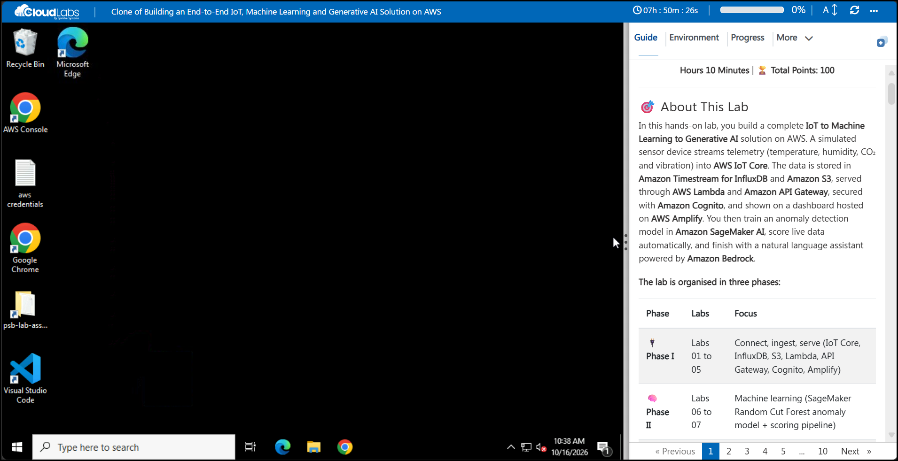
The following resources are already created for you. You do not need to create them.
| Resource | Name / Value |
|---|---|
| 🌍 Region | |
| 🪣 S3 bucket (empty) | |
| 🧪 SageMaker Studio domain | |
| 👤 SageMaker user profile | psb-lab-user |
| 🔑 SageMaker execution role | psb-lab-sagemaker-exec- |
| 💻 Lab VM | windowsvm- |
| 🧰 VM tooling | Chrome, Edge, VS Code, AWS CLI v2, Python 3.12 (python + pip on PATH), Node.js LTS (node / npm), Git |
| 📁 Lab assets | C:\psb-lab-assets + desktop shortcut psb-lab-assets |
| 📄 Desktop files | aws credentials.txt and the AWS Console shortcut |
ℹ️ Info: In Lab 02 you create the raw/, curated/ and model/ folders in the S3 bucket. In Lab 06 you create the SageMaker space psb-lab-space.
The psb-lab-assets folder on the desktop (C:\psb-lab-assets) contains everything you need:
| Folder / File | Contents |
|---|---|
| 🛰️ simulator\ | simulate_pi.py device simulator, requirements.txt, and certs\ (device certificates go here in Lab 01) |
| ⚡ lambdas\ | The 4 Lambda functions: psb-ingest-telemetry, psb-query-telemetry, psb-score-telemetry, psb-assistant (each with lambda_function.py) |
| 🧪 test-events\ | sample-reading.json, direct-query.json, manual-run.json, ask-question.json |
| 🔐 policies\ | IAM and IoT policy files (device policy, IoT rule trust and S3 write, Influx token read, score policy, assistant policy) |
| 📊 dashboard\ | React dashboard source (Vite + React 18) and prebuilt fallback dist.zip |
| 📓 notebook\ | SageMaker notebook psb-anomaly-detection.ipynb |
| 📝 README.txt | Short description of the folder |
ℹ️ Info: The lab title says Claude. The assistant you build in Lab 08 uses Amazon Nova Lite (APAC inference profile apac.amazon.nova-lite-v1:0) through the same Amazon Bedrock Converse API. Claude models can be swapped in by changing the MODEL_ID environment variable of the assistant Lambda function (and the model ARNs in its IAM policy). No code change is needed.
The top bar and the lab guide menu give you these controls:
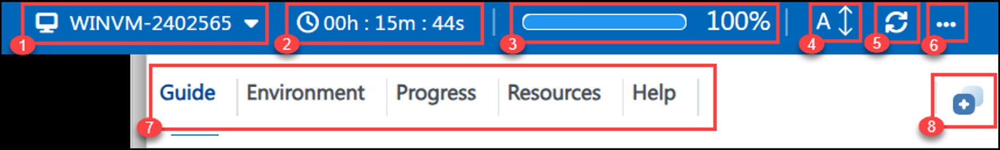
| # | Control | Use |
|---|---|---|
| 1 | VM name | Shows the lab VM you are connected to. |
| 2 | Timer | Time remaining in your lab session. |
| 3 | Progress bar | Your progress through the lab. |
| 4 | A↕ | Change the text size of the lab guide. |
| 5 | Refresh | Reconnect the VM if the screen stops responding. |
| 6 | More (...) | Language, Delete and VM Native Clipboard options. |
| 7 | Lab guide menu | Guide, Environment, Progress, Resources and Help. |
| 8 | Split window | Split the lab guide and the VM into separate windows. |
Select More (...) in the top bar to open these options:
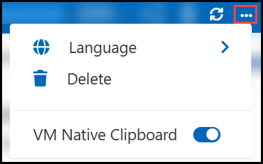
| Option | Use |
|---|---|
| 🌍 Language | Switch the lab language, if multi-language support is enabled. |
| 🗑️ Delete | Delete the environment once your lab is complete. |
| 📋 VM Native Clipboard | Allows copying files within the VM. While it is on, text copied from your local PC cannot be pasted into the VM using keyboard shortcuts. You can turn it off at any time from More (...). |
Use the tabs at the top of the lab guide to move between its sections:
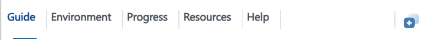
| Option | Use |
|---|---|
| 📖 Guide | All tasks and lab information. |
| 🔑 Environment | AWS console credentials and lab details. |
| 📈 Progress | Your points for validations. |
| ⚙️ Resources | Start, stop or restart the lab VM. |
| ❓ Help | Support information. |
The Progress tab shows your overall points and the status of each Validation check. Each lab has one validation, and its points are shown in the lab header:
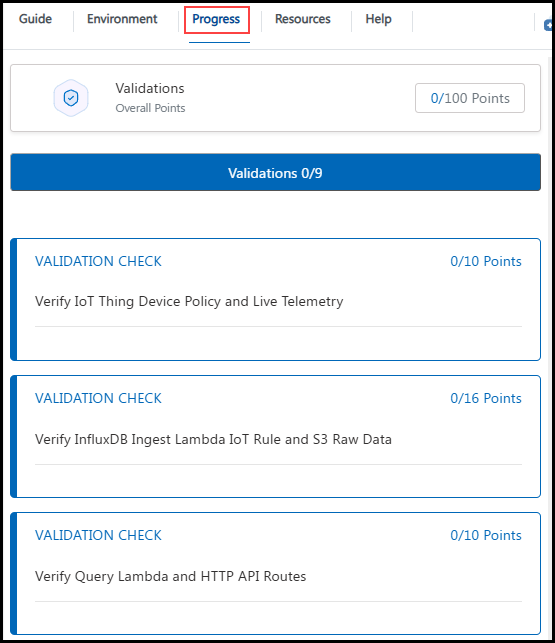
To view your AWS console credentials and resource details, navigate to the Environment tab:
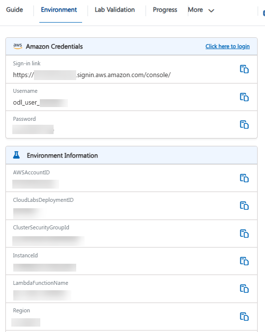
For convenience, you can open the lab guide in a separate window by selecting the Split Window button from the top-right corner:
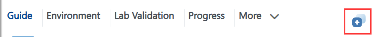
You can start, stop or restart your virtual machine as needed from the Resources tab:
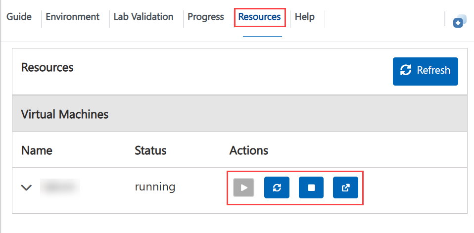
Use Previous, the page numbers and Next at the bottom of the guide to move between pages:
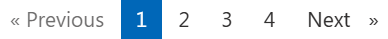
Each lab ends with a Validation Check that checks your work. Complete all tasks in the lab, scroll to the Validation Check at the end of the last task, and click Validate:
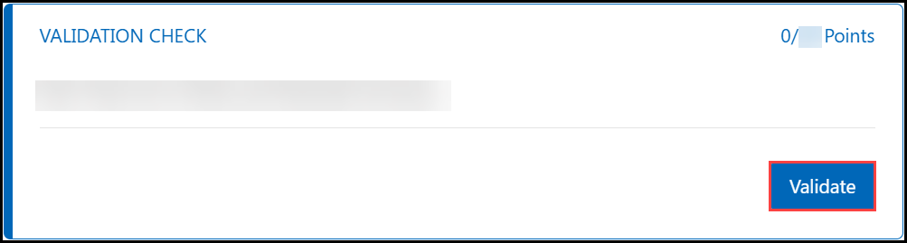
💡 Tip: Validate as often as you like. There is no penalty and no limit.
Step 1: On the lab VM desktop, double-click the AWS Console shortcut, or open the sign-in URL below in the browser:
| Detail | Value |
|---|---|
| 🔗 Sign-in URL | |
| 👤 IAM username | |
| 🔒 Password |
💡 Tip: The same credentials are also saved in the aws credentials.txt file on the VM desktop.
Step 2: Enter the IAM username (1) and Password (2), then click Sign in (3):
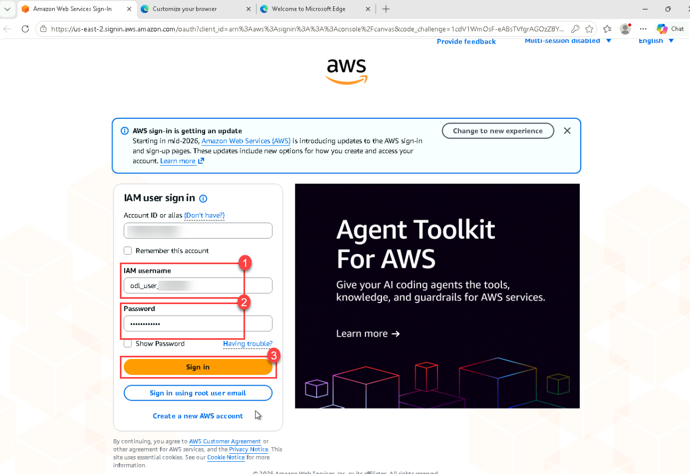
Step 3: In the top-right corner of the console, open the Region selector and choose Asia Pacific (Singapore) ap-southeast-1:
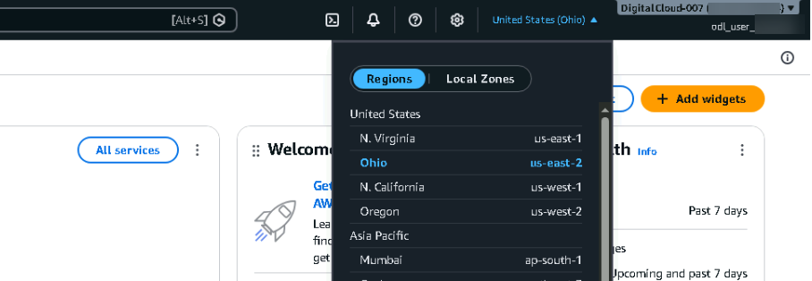
⚠️ Note: Create every resource in Asia Pacific (Singapore) ap-southeast-1. The pre-provisioned resources and the validation checks only look in this region. If something "disappears" from a console page, check the region selector first.
To use your own RDP client instead of the browser-based VM, connect with these details:
| Detail | Value |
|---|---|
| 💻 Computer | |
| 👤 Username | |
| 🔒 Password |
The CloudLabs support team is available 24/7 via email and live chat.
Click Next to begin the lab.